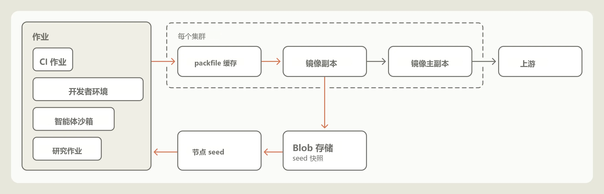
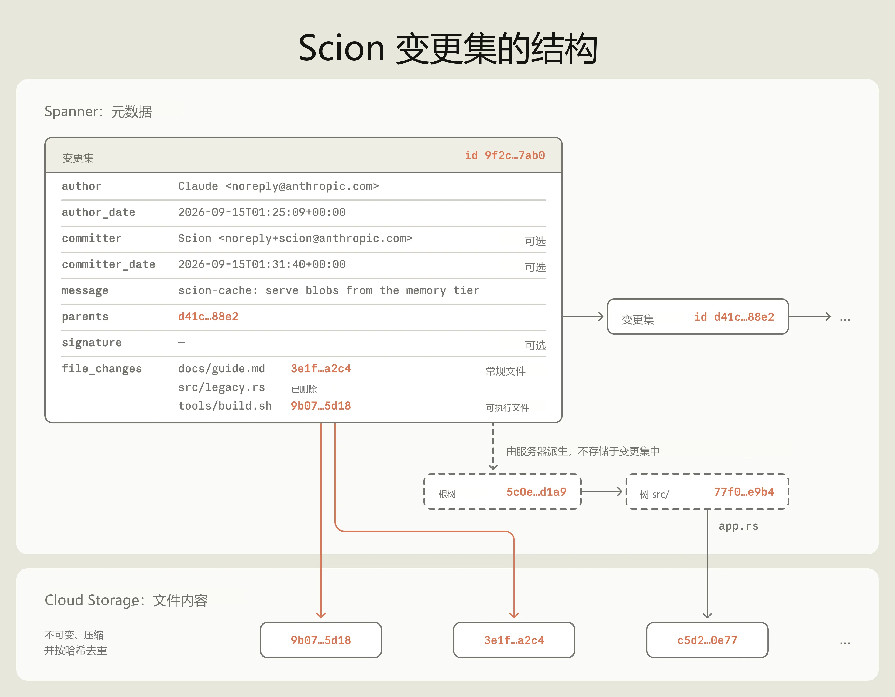
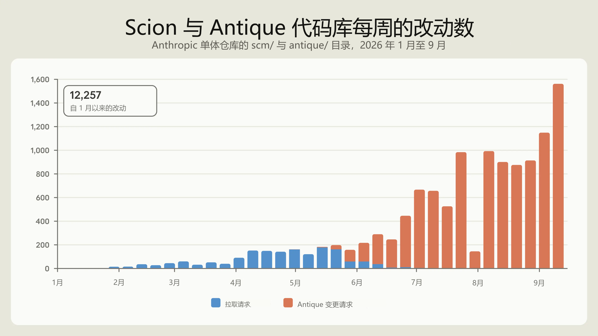
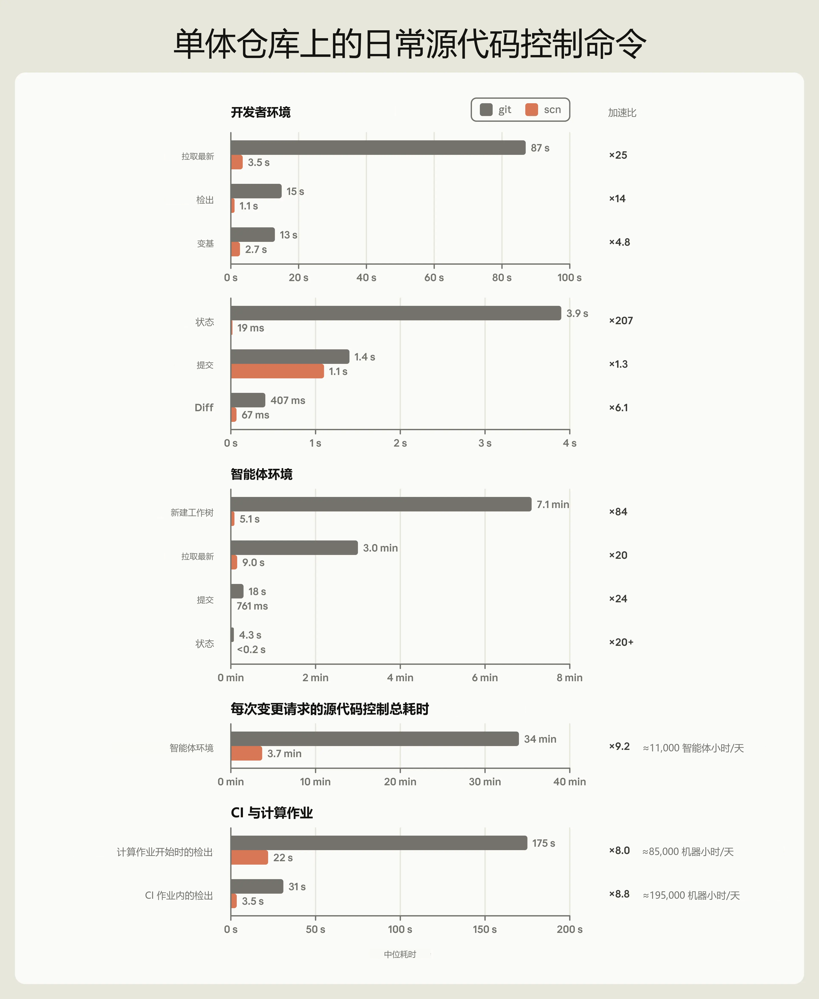
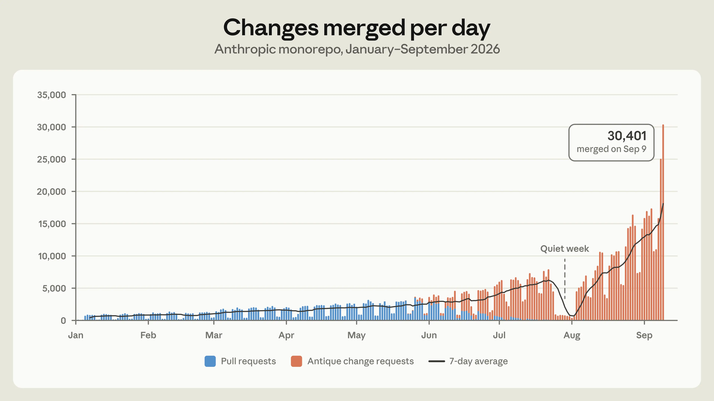
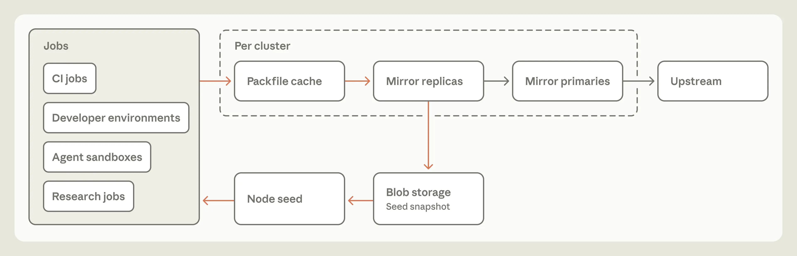
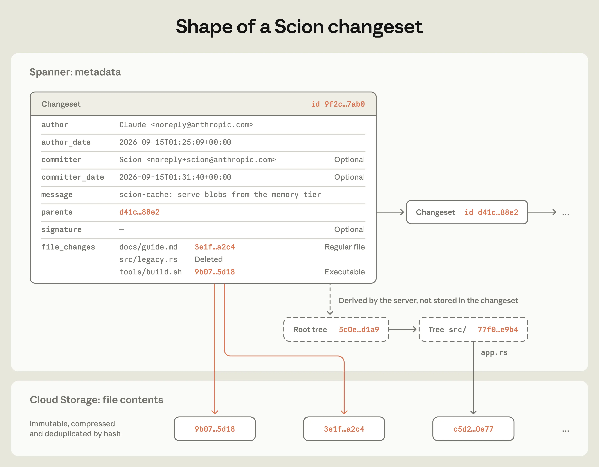
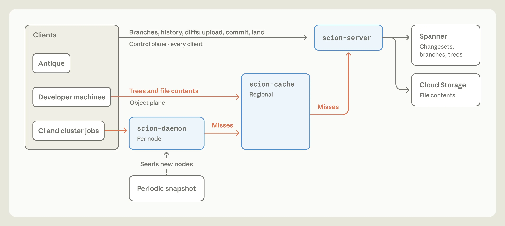
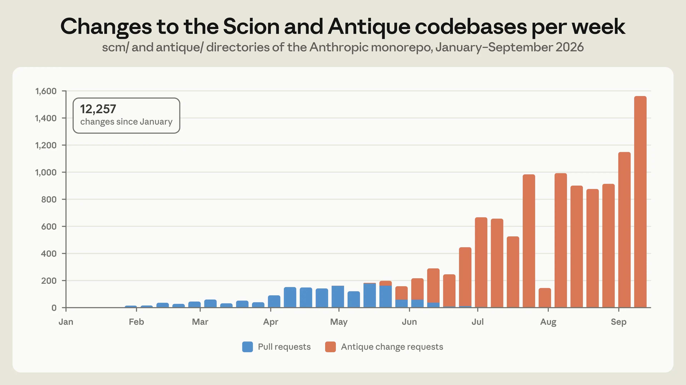
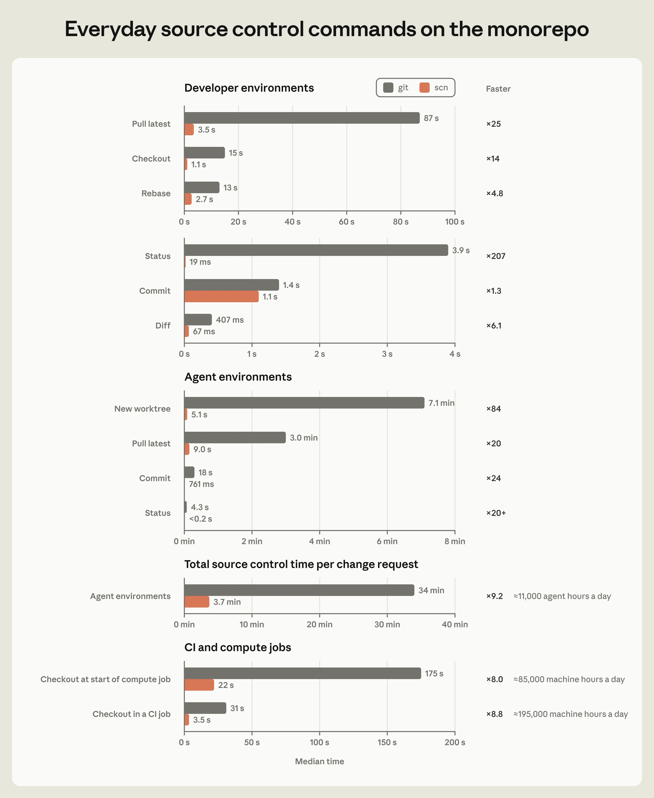

重新设计 Anthropic 的源代码控制
📖 中文摘要
专业术语注解
单体仓库（monorepo）：所有项目共用同一个超大代码仓库的开发方式变更集（changeset）：Scion的工作单元，记录相对第一父节点变化的文件列表与内容寻址指针派生数据：从变更集递归计算出的blame、路径历史等索引，可按需物化或延后计算稀疏检出：只向客户端物化其所请求目录、而非整份仓库的检出方式内容寻址存储：以内容哈希为键、写入后不可变的存储，任何节点都能安全缓存📄 中文全文
- 类别： 工程（Engineering）
- 来源： https://www.anthropic.com/research/redesigning-source-control
工程（Engineering） 2026 年 10 月 13 日 已发布 2026 年 10 月 13 日 团队 工程 主题
10 月 15 日更新：补充了更多关于那些率先采用我们在 Scion 中所用多项技术的项目的细节。 相关文章 * 特性 2026 年 2 月 23 日 Claude Code的诞生
阅读更多
在 Anthropic，编写代码已不再是构建系统或开展研究的瓶颈。Claude 能够自主迭代研究循环、对复杂程序做微观优化，并以前所未有的速度与规模从零搭建新服务。如今的瓶颈，是所有按人类尺度构建的开发者基础设施：源代码控制、构建与 CI。
2026 年 5 月，Anthropic 平均每天合入约 2,500 项代码改动；到 9 月，我们每天合入超过 30,000 项。我们预计这一增速短期内不会放缓：合入代码的潜在需求近乎无限，而每消除一个瓶颈，都会立刻让我们产出的代码量再涨一截。
 2026 年 1 月至 9 月，每天合入我们单体仓库的改动数量。
为支撑这一增长，我们构建了内部版本控制系统 Scion，并在五个月内把单体仓库从 git 完整迁移过来。同一时期，我们还构建并上线了代码评审界面（名为 Antique）、代码搜索、一套功能丰富的源代码控制 IAM 系统，以及管理和落地大量已评审代码的新方法等等。本文将专门聚焦我们如何构建 Scion。这是个有意思的案例研究：Claude 写代码的能力，既是一开始把我们推入这一处境的原因，也是 我们得以迅速构建出高质量、可扩展系统来应对它的手段。
2026 年 1 月至 9 月，每天合入我们单体仓库的改动数量。
为支撑这一增长，我们构建了内部版本控制系统 Scion，并在五个月内把单体仓库从 git 完整迁移过来。同一时期，我们还构建并上线了代码评审界面（名为 Antique）、代码搜索、一套功能丰富的源代码控制 IAM 系统，以及管理和落地大量已评审代码的新方法等等。本文将专门聚焦我们如何构建 Scion。这是个有意思的案例研究：Claude 写代码的能力，既是一开始把我们推入这一处境的原因，也是 我们得以迅速构建出高质量、可扩展系统来应对它的手段。
单体仓库的膨胀
在探讨我们构建了什么之前，得先说明我们的工作负载有多不寻常。不出所料，Anthropic 用 Claude 写软件的程度远超几乎任何一家公司，因此我们往往最先看到按人类尺度打造的工具在哪里开始吃紧。源代码控制只是其中一例。虽然我们不认为很多组织会在极短期内遇到这些问题，但我们猜想，用不了多久，其他使用 AI 编程工具的公司也会撞上同样的压力点——这正是我们想分享所做与所学的原因。 git 是一个去中心化系统：每个克隆都是完整、自包含的仓库，能在完全离线的情况下计算 diff、查看历史与 blame、检出任意版本。对绝大多数仓库来说，这是正确的设计，也是 git 成为标准的重要原因。 随着单体仓库膨胀，它越来越不符合这一设计空间。光是主分支的历史就接近 100 GB，而一份 压缩后 的工作副本超过 25 GB。我们每天为 CI 执行约 2,500 万次代码检出，这还没算开发者环境、智能体沙箱与研究作业。若按朴素方式拉取，那将意味着每天超过 600 PB 的 git 流量。 git 提供了只处理仓库局部的工具，例如浅克隆、稀疏检出与 promisor remote。除此之外，大型单体仓库还有一些标准变通办法，比如内部 git 镜像，以及保存在 blob 存储里的仓库快照（seed）。这些我们都用过——高峰期我们运维着数百个内部 git 镜像来应对负载。这为我们争取了时间，但随着合入速率上升，它们越来越难运维。两次刷新之间，seed 会离 main 的尖端越来越远；而要让 diff、blame 这类依赖历史的操作在部分克隆上正常工作，也越来越费心。

扩展 git 检出规模的典型配置。 退一步看，我们注意到，和大多数公司一样，我们把 git 当成只有一个权威副本的中心化系统来用，但我们的客户端几乎全是生来就在线的智能体与作业。那些让 git 在分布式、离线场景下表现出色的特性，恰恰在仓库变大时损害了我们扩展的能力。于是我们自问：如果从一开始就以「智能体永远在线」为前提来设计源代码控制，它会是什么样子？面向智能体尺度的源代码控制原则
随着智能体编程兴起，关于软件开发方式的许多常见假设都在变化。构建 Scion 时我们拥抱了这些变化，因此得以在若干核心原则上采取与 git 根本不同的思路。超大型单体仓库的源代码控制已有先例，尤其是 Google 的 Piper 与 Meta 的 Sapling，2 因此我们能把它们来之不易的经验融入 Scion 的构建。我们的原则是： 客户端永远在线。 git 假定客户端离线工作、需要仓库的完整副本。由于我们的客户端几乎全是智能体与作业，我们围绕一台始终可达的服务器来设计 Scion 的客户端与协议，让客户端按需取数据。 客户端与服务器不对称。 在 git 里，每个客户端都能充当完整的服务器。在 Scion 里，服务器负责回答关于文件历史与 blame 的查询、创建提交、执行合并与变基等等。客户端只维护一个有界的本地对象缓存、把工作副本文件铺到磁盘上、监听文件系统变化，并为用户提供一种顺手的与服务器协作的方式。它自身几乎算不了什么，但作为交换，本地所需的数据也少得多。 一套完备的源代码控制服务能支撑许多新颖应用。 在 git 里，某个 CI 作业或工具若想查询仓库（例如某行最后是谁改的、两次提交如何关联），就得维护一份仓库本地副本，或指望厂商专属 API 给出答案。在 Scion 里，客户端用到的所有源代码控制查询也通过 API 暴露出来，因此很多时候作业根本不需要本地仓库。我们的许多内部工具——比如自动 bisect 与回滚流水线——若没有这种廉价、可编程的源代码控制访问，根本无法规模化落地。 一切都必须可水平扩展。 高峰期我们跑着数百个 git 镜像，这极大地挤占了容量；一旦仓库超出镜像的磁盘或内存上限，就再也扩不动了。在 Scion 里，仓库数据是分布式的，每个组件都能独立扩展；任何地方（连服务器上也）都不存在仓库的完整物化副本。它也没有 packfile（git 把对象压缩打包的产物）的对应物，因此无需做仓库维护。 提交必须廉价、增量且无锁。 在 git 里，你在本地提交，再 push 出去共享工作。在 Scion 里，每次提交、变基或合并都发生在服务器上，因此没有东西需要 push，但每一项操作都必须够快。创建一次提交并更新其下游数据结构的成本，必须随改动大小而非仓库整体大小增长，否则服务器跟不上。Scion 的开发生命周期不鼓励使用 ref（指向提交的指针，例如分支与标签），只保留 main ref 或发布分支——因为每台服务器都得达成一致的 全局 状态，是个迫在眉睫的扩展难题。 工作副本是可选的，且生来就是稀疏的。 由于我们的单体仓库如此庞大，又每天为 CI 检出代码数千万次，我们希望尽可能避免检出。有了 Scion，比如某个 CI 作业需要一次提交与其合并基之间的 diff，可以直接向服务器索取。写入同理：许多写入负载也能跳过检出，完全通过 API 完成。Scion 的协议以稀疏检出（只包含客户端所请求的目录）与虚拟化检出（按需物化文件）为核心，因此当作业确实需要磁盘上的文件时，客户端只需为它真正读到的内容付费。
Scion 如何工作
理解这些原则在构建 Scion 时如何落到实地会很有帮助。这些洞见也适用于其他源代码控制系统，或更宽泛地说，适用于软件开发生命周期的其他阶段。
数据结构
在 Scion 里，工作单元是「变更集」（changeset），即预写日志中的一条记录。变更集存放着你对 git 提交所期望的大部分信息。但 git 提交存的是指向树的指针，变更集存的则是一份相对其第一父节点发生变化的文件列表，1 以及指向 blob 存储中压缩文件内容的内容寻址指针。变更集在服务器端创建，立刻就能在所有地方访问。

Scion 中变更集的结构。 这一结构让我们能以极高吞吐接收变更集，因为既没有要接收的 packfile，也没有加锁或跨服务器协调，更没有需要挪动的 ref。Scion 技术上确实支持 ref，但由于创建与拉取提交都不涉及它，移动一个 ref 只是对单条 Spanner 行做一次比较并交换（compare-and-swap），与创建变更集彼此分开。 变更集只记录改了什么，因此单靠它无法快速回答「某行最后是谁改的」「哪些提交动过某文件」这类问题。为此，Scion 从变更集中构建出额外的数据结构，包括专用于文件 blame 与路径历史的结构，以及提交图的跳表。我们把不直接属于变更集的一切称为「派生数据」，并通过一套通用机制统一计算。每一类派生数据都以递归方式定义：某个变更集上的取值，由它各父节点上的取值算出。 这套机制有三个好处。第一，当某种新数据结构能让某项操作更快时，我们可以轻松新增一类派生数据。第二，对每一类，我们都能选择立即计算还是延后处理，从而避免物化用不到的数据。第三，由于客户端永远看不到这些数据结构的内部，我们可以在不改动客户端的前提下优化它们。随着系统成长，我们多次新增过派生数据类型，例如用于复制检测或基于路径的文件搜索的新索引。扩展 Scion
一小队 Scion 服务器为客户端所需的任何操作提供源代码控制 API，例如获取变更集、计算 diff、查找合并基、拉取 blob。所有源代码控制数据都是内容寻址的，因此一份数据一旦写入就不再改变，任何服务器都能缓存它而无需与其他服务器核对。结果是，这些服务器可水平扩展、几乎不需要协调。它们本质上是大型缓存，同时还能即时计算派生数据，并把结果写回 Spanner。
Scion 的众多使用方不再需要各自维护本地仓库。对那些需要查询源代码控制、尤其是提交祖先关系与 blame 的 CI 作业或工具来说，拉取并维护仓库过去是一项沉重的运维负担。迁移早期，在我们还没有自己的客户端、仓库格式与协议之前，Scion 只回答这类「元数据」查询。拉取文件内容与物化工作副本的数据密集程度高得多，需要单独设计。
Scion 的 scn 客户端在几个重要方面偏离了 git 的拉取协议，因而天然适合一种高度可扩展、且比 git 服务器省得多 CPU 的架构。Scion 的协商不会告诉服务器客户端已有什么，而只围绕客户端想要的树与 blob 展开。从根树出发，客户端在本地存储里查缺，递归请求缺少的树，再对 blob 重复这一过程。每个请求针对的都是永不改变的特定对象，因此任何缓存都能应答，整个架构很像传统的分层缓存。这一过程还高效且可续传，因为不存在单个数 GB 的 packfile 响应。稀疏检出乃至虚拟化检出都无需特别支持——客户端干脆不请求它不想要的树。
在集群里，客户端通过套接字与一个守护进程 scion-daemon 通信，后者为整台节点存放对象。我们的大多数节点都需要访问单体仓库，而同一节点上的作业复用的往往是同一批对象。每个守护进程从一份定期刷新的快照起步，随后只与本区域的树与 blob 缓存服务器（称为 scion-cache）对话。这些缓存服务器直接从内存、以守护进程将要消费的磁盘格式流式送出对象，因此不必花时间计算客户端缺哪些对象或做增量压缩。当某个缓存缺对象时，它去向权威的 scion-servers 索取，后者按需从 Spanner 或云存储读取。
scion-daemon、scion-cache 与 scion-server 对这一协议响应的是完全相同的 RPC，因此客户端无需知道缓存拓扑。理论上任一层都能与任意其他层通信，但我们严格执行分层，以隔离故障域。我们要避免这样的局面：某个区域的 scion-cache 一出故障，就压垮上游 scion-servers，进而拖垮整个系统。
 Scion 的检出架构。
这套系统的每一层都保持 99% 以上的缓存命中率，且不需要长期存活的状态，因此要扩容很容易。就 CPU 与内存需求而言，我们如今的 Scion 基础设施占用比此前的 git 镜像基础设施小 200 倍。CI 与研究作业检出代码快了两个数量级（以秒计而非以分计），这为整个集群腾出了可观的容量；光是 CI 就实现了 25% 的 CPU 容量收益。客户端与缓存都不必做仓库维护，这简化了我们作业的生命周期管理。
Scion 的检出架构。
这套系统的每一层都保持 99% 以上的缓存命中率，且不需要长期存活的状态，因此要扩容很容易。就 CPU 与内存需求而言，我们如今的 Scion 基础设施占用比此前的 git 镜像基础设施小 200 倍。CI 与研究作业检出代码快了两个数量级（以秒计而非以分计），这为整个集群腾出了可观的容量；光是 CI 就实现了 25% 的 CPU 容量收益。客户端与缓存都不必做仓库维护，这简化了我们作业的生命周期管理。
构建 Scion 的收获
我们动手构建 Scion，大约与 Claude Mythos Preview 和 Claude Tag 在内部可用的时间重合。这两个版本同时放大了对 Scion 的需求，也切实加快了我们构建它的速度。 这里有个格外突出的例子。那年早些时候，我们基本靠手写完成了 git 到 Scion 的摄取流水线第一版，作为原型。我们本以为它不错——直到拿到 Claude Mythos Preview 的早期内部快照。我们请它把整段重写一遍，在没有给出任何进一步指示的情况下，它交出的版本内存消耗少了 20 倍、速度快了 4 倍，同时完整保留了摄取顺序与数据结构周围所有隐含的不变量。

2026 年 1 月至 9 月，每周合入 Scion 与 Antique 代码库的改动。 构建并运维 Scion 的所学，为「面向智能体尺度的软件该怎样构建」提供了一些有意思的启示。 小团队的快速开发会变得更常见。 一个七人团队既构建了 Scion，也 构建了 Antique（我们的代码评审工具，单为它就能再写一整篇博客），此外还做了六七个相关系统，并在五个月内完成全面迁移。而这一切，是在每天合入的代码量增长 10 倍的同时做到的。过去，开发并部署这样一套源代码控制系统，往往要一家公司耗费数年迭代迁移、投入多得多工程师。我们认为，这种快速、灵巧的迁移未来会更常见。 工程师的价值不减，但工作正在变化。 参与这套系统的所有工程师如今都会认为 Claude 写 代码比自己更强。但我们的工程师仍然提供了对高层系统间组件与设计层取舍的宝贵理解，围绕「想解决哪些问题」「需要达到怎样的规模」做出有依据的选择。我们常常发现，工程师的角色是对 Claude 说「不」。智能体有时会为满足某个本就不该被允许的模式，而违背系统的核心约束。这在我们的迁移里尤其常见。例如，有好几个系统不去问我们的代码评审工具，而是靠线性读提交日志来暴力查某次改动何时合入 main。Anthropic 也大量使用对抗式评审，它在很多方面极其有效，却也可能目光短浅，因此需要熟练的工程师把 Claude 从「因假想顾虑而过度设计系统某些部分」的倾向里拉回来。比如，有一次评审对信任另一个内部服务过分戒备，结果让 Claude 加上了过量的校验与复杂度。我们的团队成员至今仍审阅系统的每一次变更请求，但他们现在审的是改动的 意图，而不是逐行读代码。 我们得以大幅提升优化与质量。 凭 Claude 能以远快于我们的速度写出海量代码，Scion 成了我们经手过测试最充分、防护最严密的代码库之一。即便时间线很紧，我们仍为我们遇到过的每一个非平凡的基础设施与源代码控制交互构建了封闭仿真，还做了模糊测试与精细的限流。Claude 还随手找到了不少重要优化——例如某次祖先查询漏用了我们一个索引的算法级优化，这类事本要专家花上数天乃至数周去分析调优……而它第二天又照样来了一遍。
在原生 Scion 仓库上观测到的性能提升。 我们为新形式的单体仓库安全打下了基础。 在庞大的单体仓库里，管理安全、保密与合规，与管理其体量和规模同样重要。我们从一开始就带着这些考量构建 Scion。它支持对仓库做细粒度访问控制，也能把权限施加到单个目录，从而在不丢掉单体仓库好处的前提下保护最敏感的代码。此外，我们构建的代码评审工具能表达关于审批的复杂语义约束，让我们把「仅改注释」这类简单变更与敏感的逻辑变更区分开来，使人类评审者能聚焦在最要紧的改动上。 运维水准可以迈上新台阶。 我们团队大量使用 Claude Tag，它帮我们监控系统的每个组件。例如，我们建了一些 Slack 频道，让 Claude 一门心思盯住某一个组件的健康状况。我们管这些 Claude 叫「超级粉丝」（superfans）。我们有 scion-daemon 超级粉丝、scion-cache 超级粉丝、Antique 合并队列超级粉丝等等。它们能访问我们的遥测与日志，表现得像一位经验丰富的工程师——除了刷新图表、留意任何异常之外没别的事可做。我们也为所有系统配了传统告警，但超级粉丝能察觉细微而新颖的问题，相形之下那些告警倒显得单薄了。 我们正在彻底重审既有成见。 这个项目促使我们非常严肃地重新审视其他按人类尺度设计的工作流。比如，一套规规矩矩的合并队列，在智能体尺度下就没多大意义。当成百上千项改动能在测试跑着的同时合入时，CI 究竟还意味着什么？我们没能有效复刻「在合并队列上加全局仓库锁」这一行业标准，于是转而投入合并后、部署前的自动化测试。这确实意味着并发改动可能冲突，但 Claude 解决这些冲突，通常比人类甚至还没识别出它们来得更快。为更广阔的生态做贡献
我们把 Scion 看作「能力日益增强的 AI 智能体所带来的扩展顾虑」的答案之一。分享这些细节，是想给团队如何应对类似挑战提供一个例子，并不指望我们的方案或考量适合每一种情形。 就通用用途而言，Scion 绝不适合取代 git。这里勾勒的这些概念，其实只对真正庞大的单体仓库才有意义——要么有数万名工程师，要么有成群的智能体在大量写代码。况且 Anthropic 很特殊：我们为内部用途消耗 token 的能力，远超任何一家企业现实上愿意花的量。我们这么做，既为满足自身的软件开发需要，也为检验 Claude 的能力。 实际上，很难把 Scion 做成一种对其他组织广泛有用的形态。它与 git 差异太大，意味着公司得迁移开发生命周期的每一个环节，而且它需要自带的代码评审、代码搜索与 CI。这些组件的内部版本高度定制，其他组织难以采用；我们也担心，硬要做一个试图取悦所有人的公开版本，到头来并不会太有用。 不过，我们预计这类问题在未来六到十二个月会变得更普遍，而让每一家用 git 的公司都独自面对类似挑战，是对工程资源的低效使用。有鉴于此，我们认为能做的最有影响力的事，是分享我们的思路，让其他开发者把 Scion 中最成功的部分应用到 git 上，而不必脱离整体模型。git 服务器不必与 git 客户端以同样方式工作；已经存在一些能带来显著扩展改进的新颖服务器架构。git 平台可以提供像 Scion 那样完备的服务器端 RPC，甚至以跨 forge 的标准化方式提供，让 git 客户端学会与之对话。协商协议也不必非得长成今天这个样子，git 里各种稀疏与浅层特性同样可以组合得很好。 最后，我们要致意：git 社区花了近二十年，把这个平台扩展到服务数百万开发者。我们的贡献要窄得多：分享我们对「智能体式软件开发如何与这些系统相互作用」的早期观察，以便与 GitHub、GitLab 及开源社区携手，支撑开发者不断变化的需求。当软件开发生命周期与 AI 的指数曲线交汇时，我们都在同一条船上。
脚注
01把发生变化的文件相对合并的第一父节点来存储，是一种风格选择；实践中我们发现，在单体仓库的主干开发里，人们只关心主线提交的历史或 blame。 02具体而言，是 Sapling 的服务器组件 Mononoke。它开创了我们用在 Scion 里的许多技术，尤其是 Bonsai 数据模型。
作者与致谢
致谢
由 Nick G. 与源代码控制团队（S.G.、R.K.、Dan C.、Garrett H.、Ben L.、Colin M.、Joe P.）撰写。我们感谢 Vilas J. 与 Sergiu D. 在这段雄心勃勃的历程中对源代码控制团队的支持，也感谢 Amir O. 对 Antique 的早期贡献。
▸ 英文原文（点击展开）
Redesigning source control at Anthropic
- Date: 2026-10-13
- Source: https://www.anthropic.com/research/redesigning-source-control
Redesigning source control at Anthropic
Published Oct 13, 2026 Team Engineering Topics
Updated October 15 to include more detail on the projects that pioneered many of the techniques we use in Scion. Related articles * Features Feb 23, 2026 The making of Claude Code
View more At Anthropic, coding is no longer the bottleneck to building systems or doing research. Claude is able to autonomously iterate on research loops, micro-optimize complex programs, and build new services from the ground up at a speed and scale we haven’t seen before. The bottleneck, now, is all of the developer infrastructure built for human scale: source control, builds, and CI. In May 2026, Anthropic averaged around 2,500 code changes merged per day; as of September, we merged over 30,000 per day. We don’t expect this rate of growth to slow down anytime soon; the latent demand for merging code is practically infinite, and every bottleneck we remove immediately leads to a further increase in the amount of code we produce.

Changes merged to our monorepo per day, from January to September 2026. In order to support this growth, we built Scion, an in-house version control system, and fully migrated our monorepo from git in five months. We also built and shipped a code review surface (called Antique), code search, a rich source control IAM system, novel ways of managing and landing large amounts of reviewed code, and more, all in that same time period. In this post, we’ll focus on how we built Scion specifically. It makes for an interesting case study: Claude’s ability to write code was both what put us in this situation in the first place and how we were able to quickly build a high-quality, scalable system to deal with it.Growing our monorepo
Before we explore what we built, we should acknowledge how unusual our workload is. Unsurprisingly, Anthropic uses Claude to write software far more than almost any other company, so we’re often the first to see where tools built for human scale start to strain. Source control is just one example of this. While we don’t expect many organizations to have these problems in the very near term, we suspect it won’t be too long before others who use AI coding tools experience these same pressure points, which is why we wanted to share what we built and what we learned. Git is a decentralized system: every clone is a complete, self-contained repository that can compute diffs, read history and blame, and check out any revision while fully offline. For the vast majority of repositories, this is the right design, and it’s a large part of why git became the standard. As our monorepo grows, it increasingly doesn’t fit that design space. The history of our main branch alone is almost 100 GB, and a compressed working copy is over 25 GB. We perform on the order of 25 million code checkouts per day for CI, before counting developer environments, agent sandboxes, and research jobs. Fetched naively, that would be over 600 PB of git traffic per day. Git offers tools for working with a slice of a repository, such as shallow clones, sparse checkouts, and promisor remotes. Beyond these, there are standard workarounds for large monorepos, like internal git mirrors and repository snapshots (seeds) kept in blob storage. We’ve used all of them—at our peak, we operated several hundred internal git mirrors to deal with the load. This bought us time, but they became harder to operate as our merge rate increased. Seeds fell further from the tip of main between refreshes, and it took more and more care to keep operations that depend on history, like diff and blame, working on partial clones.

The typical setup for scaling git checkouts. Taking a step back, we noticed that, like most companies, we were using git as a centralized system with one authoritative copy, but nearly all of our clients were agents and jobs that are online by definition. The properties that make git excellent for distributed, offline work were actively undermining our ability to scale as the repo grew. So we asked ourselves: if we designed source control with the fact that agents are always online in mind from the start, what would it look like?Principles for agent-scale source control
With agentic coding, many common assumptions about how software is developed are evolving. We embraced these changes when building Scion, which allowed us to take a fundamentally different approach than git on several core principles. Source control for huge monorepos has prior art, notably Google’s Piper and Meta’s Sapling,2 so we were able to build Scion with their hard-won lessons in mind. Our principles are: Clients are always online. Git assumes that clients work offline and need a complete copy of the repository. Since nearly all of our clients are agents and jobs, we designed Scion’s client and protocols around a server that is always reachable, and have clients fetch data when they need it. Client-server asymmetry. In git, every client is capable of being a full-fledged server. In Scion, the server answers questions about file history and blame, creates commits, performs merges and rebases, and so on. The client maintains a bounded local object cache, lays out the working copy files on disk, monitors for filesystem changes, and gives users an ergonomic way to work with the server. It can compute very little on its own but, in exchange, it requires much less data locally. A comprehensive source control service can power many novel applications. With git, a CI job or tool that needs to ask a question about the repository, such as who last changed a line or how two commits are related, has to maintain a local copy of the repo or hope that vendor-specific APIs provide the answer. With Scion, all of the source control queries the client uses are also exposed via API, so in many cases jobs don’t need a local repository at all. Many internal tools, such as our automated bisect and revert pipelines, wouldn’t be practical at scale without this cheap, programmatic access to source control. Everything must be horizontally scalable. At our peak, we ran several hundred git mirrors, which significantly strained capacity and no longer scaled once the repo outgrew the mirrors’ disks or memory limits. In Scion, the repository’s data is distributed, and every component is independently scalable; there is no fully materialized copy of the repo anywhere, even on the server. There is no equivalent of packfiles (git’s compressed bundles of objects), so no repository maintenance is needed. Commits must be cheap, incremental, and lock-free. In git, you commit locally and then push to share your work. In Scion, every commit, rebase, or merge happens on the server, so there’s nothing to push, but each of those operations needs to be fast. The cost of creating a commit and updating its downstream data structures has to scale with the size of the change, not the overall size of the repo, or the server can’t keep up. The development lifecycle in Scion discourages refs (pointers to commits, such as branches and tags), except for the main ref or release branches, because global state that every server has to agree on is a looming scaling problem. The working copy is optional, and sparse by design. Because our monorepo is so large, and because we check out code tens of millions of times a day for CI, we wanted to avoid checkouts whenever we could. With Scion, a CI job that needs the diff between a commit and its merge base, for example, can ask the server for it. The same goes for writes: many write workloads can also skip the checkout and function entirely via API. Scion’s protocol is centered around sparse checkouts, which only contain the directories the client asks for, and virtualized checkouts, which materialize files on demand, so when a job does need files on disk, the client only pays for what it actually reads.
How Scion works
It’s helpful to understand how these principles came together in practice when building Scion. These insights can apply to other source control systems or, more broadly, to other stages of the software development lifecycle.
Data structures
In Scion, the unit of work is a “changeset,” an entry in a write-ahead log. A changeset stores most of what you’d expect from a commit in git. But where a git commit stores a pointer to the tree, a changeset stores a list of the files that changed relative to its first parent,1 along with content-addressed pointers to the compressed file contents in blob storage. Changesets are created server-side and are available everywhere, instantly.

The shape of a changeset in Scion. This structure lets us accept changesets with very high throughput because there are no packfiles to accept, no locking or cross-server coordination, and no refs to move around. Scion does technically support refs, but since neither creating nor fetching commits involves them, moving one is a compare-and-swap on a single Spanner row that happens separately from creating changesets. A changeset records only what’s changed, so on its own, it can’t quickly answer questions like who last edited a line or which commits affected a file. To answer those, Scion builds additional data structures from the changesets, including dedicated structures for file blame and path history and skip lists for the commit graph. We call everything that isn’t directly part of the changeset “derived data,” and we compute it all through one generic mechanism. Each type of derived data is defined recursively, so its value for a changeset is computed from its values for that changeset’s parents. This mechanism has three benefits. First, we can easily add a new type of derived data when a new data structure would make some operation faster. Second, for each type, we can choose whether to compute it eagerly or defer the work, so we avoid materializing data we don’t need. And third, because the client never sees the internals of these data structures, we can optimize them without changing the client. We’ve added new types of derived data many times as the system has grown, such as new indices for performing copy detection or path-based file search.Scaling Scion
A small fleet of Scion servers provides source control APIs for any operation a client needs, such as getting changesets, computing diffs, finding merge bases, and fetching blobs. All source control data is content-addressed, so a piece of data never changes once it’s stored, and any server can cache it without checking with the others. As a result, the servers are horizontally scalable and require little coordination. They are essentially large caches that can also compute derived data on the fly and write the results back to Spanner. Scion’s many consumers no longer need to maintain local repositories of their own. Fetching and maintaining the repository used to be a significant maintenance burden for CI jobs or tools that needed to ask source control questions, particularly about commit ancestry and blame. Early in the migration, before we had our own client, repo format, or protocols, Scion only answered these “metadata” queries. Fetching file contents and materializing working copies are far more data-intensive operations, and they needed a design of their own. Scion’s scn client deviates from git’s fetch protocols in several important ways and, as a result, lends itself to a highly scalable architecture that requires significantly less CPU than git servers. Scion’s negotiation doesn’t tell the server what the client already has; instead, it operates exclusively on trees and blobs the client wants. Starting from a root tree, the client checks its local store for missing trees and requests them recursively, then repeats the process for blobs. Every request is for a specific object that never changes, so any cache can answer it, and the architecture closely resembles traditional tiered caches. The process is also efficient and resumable, because there is no single multi-gigabyte packfile response. Sparse and even virtualized checkouts don’t need special support, because the client simply doesn’t ask for trees it doesn’t want. In the fleet, the client talks over a socket to a daemon, scion-daemon, that stores objects for the whole node. Most of our nodes need access to the monorepo, and jobs on the same node reuse most of the same objects. Each daemon starts from a periodically refreshed snapshot, then talks only to the tree and blob cache servers in its region, called scion-cache. These cache servers stream objects directly from memory, in the disk format that the daemon will consume, so they don’t need to spend time computing the client’s missing objects or performing delta compression. When a cache is missing an object, it asks the authoritative scion-servers, which read from Spanner or cloud storage as needed. The scion-daemon, scion-cache, and scion-server all respond to identical RPCs for this protocol, so the client doesn’t need to know the cache topology. Any tier could theoretically talk to any other, but we strictly enforce the tiering to isolate failure domains. We want to avoid a situation where a failure in a regional scion-cache overwhelms the upstream scion-servers and brings down the entire system.

Scion’s checkout architecture. Each tier of this system maintains a cache hit rate of over 99% and does not require long-lived state, so it’s easy to scale up if needed. Our Scion infrastructure footprint is now 200x smaller than our previous git mirroring infrastructure in terms of CPU and memory requirements. CI and research jobs check out code two orders of magnitude faster (in seconds rather than minutes), which frees up a sizable amount of capacity across the fleet; CI alone realized a 25% CPU capacity win. Neither clients nor caches need to perform repository maintenance, which simplifies the lifecycle management of our jobs.What we learned building Scion
We started building Scion around the same time as Claude Mythos Preview and Claude Tag became available internally. Both of these releases simultaneously amplified the need for Scion __ and meaningfully accelerated how quickly we could build it. Here’s a particularly striking example. Earlier in the year, we had largely handwritten the first version of the git-to-Scion ingestion pipeline as a prototype. We thought it was good—until we got our hands on an early internal snapshot of Claude Mythos Preview. We asked it to rewrite the whole thing, and with no further instructions, it produced a version that consumed 20x less memory and was 4x faster, while preserving all of the implicit invariants around ingestion ordering and data structures.

Merged changes to the Scion and Antique codebases per week, from January to September 2026. What we learned building and operating Scion offers some interesting lessons for what building agent-scale software could look like. Rapid development with a small team will become more common. A team of seven people built both Scion and Antique (our code review tool, which we could easily write a whole other blog post about), not to mention half a dozen related systems, and fully migrated to them in five months. We did all this while the volume of code merged per day increased by 10x. In the past, developing and deploying a source control system like this would have taken a company years of iterative migration, with many more engineers. We think this sort of fast, nimble migration will become more common in the future. Engineers are no less valuable, but their work is changing. All of the engineers who worked on this system would now rate Claude as better at writing code than them. But our engineers still supplied the invaluable understanding of the high-level inter-system components and the design-level tradeoffs, making informed choices around the problems we wanted to solve and the scale we knew we needed to achieve. Very often, we found that the role of the engineers was to tell Claude “no.” Agents will sometimes violate core system constraints to satisfy a pattern that should never have been allowed in the first place. This was particularly common in our migration. For example, there were multiple systems that tried to brute force looking up when a change merged to main by linearly reading the commit log instead of asking our code review tool. Anthropic also makes extensive use of adversarial review, and, while this is incredibly effective in many ways, it can also be myopic, so skilled engineers needed to steer Claude away from over-engineering parts of the system in response to hypothetical concerns. For example, one such review was overly defensive about trusting another internal service, which resulted in Claude adding excessive validation and complexity. Our team members still review every change request for the system, but they now examine the intent of the change as opposed to reading every line of code. We were able to substantially improve optimization and quality. By virtue of Claude’s ability to write immense amounts of code much faster than we could ourselves, Scion is among the most well-tested and well-defended codebases we have ever worked on. Even on our tight timeline, we were able to build hermetic simulations of every non-trivial infrastructure and source control interaction we’ve ever encountered, as well as fuzzing and sophisticated rate limiting. Claude also casually found significant optimizations—for example, an algorithmic optimization to ancestry queries that missed one of our indexes—that would have taken an expert days or weeks of analysis and tuning… and then did it all again the next day.
Observed performance improvements on native Scion repos. We laid the groundwork for new forms of monorepo security. Managing safety, security, and compliance in a massive monorepo is as important as managing the size and scale. We built Scion with these in mind from the start. It supports rich access control on repositories, as well as the ability to apply permissions to individual directories in order to protect the most sensitive code without losing the benefits of a monorepo. Furthermore, the code review tooling we built can express complex semantic constraints on approvals, which lets us differentiate simple things like comment-only changes from sensitive logical changes, so that human reviewers can focus on the most consequential changes. A new level of operational excellence is possible. Our team uses Claude Tag heavily, which has helped us monitor each component of the system. For example, we created Slack channels where we tasked Claude with being obsessively focused on the health of a single component. We call these Claudes “superfans.” We have a scion-daemon superfan, a scion-cache superfan, an Antique merge queue superfan, and so on. They have access to our telemetry and logs, and act like an experienced engineer who has nothing better to do than to refresh charts and look for anything strange. We also have traditional alerts for all of our systems, but our superfans can detect subtle and novel issues that make these alerts seem one-dimensional by comparison. We’re completely rethinking our priors. This project prompted us to take a very hard look at other workflows designed for human scale. A proper merge queue, for example, doesn’t make much sense at agent scale. What does CI even mean when hundreds or even thousands of changes can merge while tests are running? We haven’t been able to effectively replicate the industry standard of a global repository lock on the merge queue, so instead, we’ve invested in post-merge and pre-deploy automated testing. This does mean that concurrent changes can conflict, but Claude can typically fix these conflicts faster than humans can even identify them.Contributing to the wider ecosystem
We see Scion as just one part of the answer to the scaling concerns that increasingly capable AI agents have raised. We’re sharing these details as an example of how teams can tackle similar challenges, though we don’t expect our solution, or our considerations, to suit every case. Scion is by no means a suitable replacement for git for general use. The concepts we’ve outlined here really only make sense for truly enormous monorepos, with either tens of thousands of engineers or swarms of agents prolifically writing code. Plus, Anthropic is unique in that our ability to spend tokens for internal use far exceeds what any other business would realistically want to spend. We do this both to address our own software development needs, and to test Claude’s capabilities. Practically speaking, it’s difficult to offer Scion in a form that would be broadly useful to other organizations. It diverges significantly from git, meaning companies would need to migrate every piece of the development lifecycle, and it requires its own code review, code search, and CI. Our internal versions of these components are highly bespoke, so they would be difficult for other organizations to adopt, and we worry that attempting to build a public version that tries to please everyone wouldn’t actually be very useful. However, we anticipate that this class of problems will become more commonplace over the next six to 12 months, and it would be an inefficient use of engineering resources for every company using git to face similar challenges alone. Given that, we think the most impactful __ thing we can do is to share our thinking, so that other developers can apply some of the most successful parts of Scion to git without departing from the overall model. A git server doesn’t have to work the same way as a git client does; novel server architectures exist that provide significant scaling improvements. Git platforms can provide comprehensive server-side RPCs like Scion, perhaps even in a standardized way across forges that the git client can learn to talk to. The negotiation protocol doesn’t have to look exactly like it does today, either, and the various sparse and shallow features in git can be made to compose well. Lastly, we want to acknowledge that the git community has spent nearly two decades scaling the platform for millions of developers. Our contribution is far narrower: sharing our early view into how agentic software development interacts with these systems, so that we can partner with GitHub, GitLab, and the OSS community to support the changing needs of developers. We’re all in it together as the software development lifecycle intersects with the AI exponential.
Footnotes
01Storing changed files relative to the first parent of a merge is a stylistic choice; in practice, we’ve found that people only care about history or blame for commits on the main line in trunk-based development in a monorepo. 02Specifically, the server component of Sapling, Mononoke. It pioneered many of the techniques we use in Scion, in particular the Bonsai data model.
Authors & acknowledgements
Acknowledgements
Written by Nick G. and the source control team: S.G., R.K., Dan C., Garrett H., Ben L., Colin M., Joe P. We’re grateful to Vilas J. and Sergiu D. for supporting the source control team on this ambitious journey and Amir O. for early contributions to Antique.